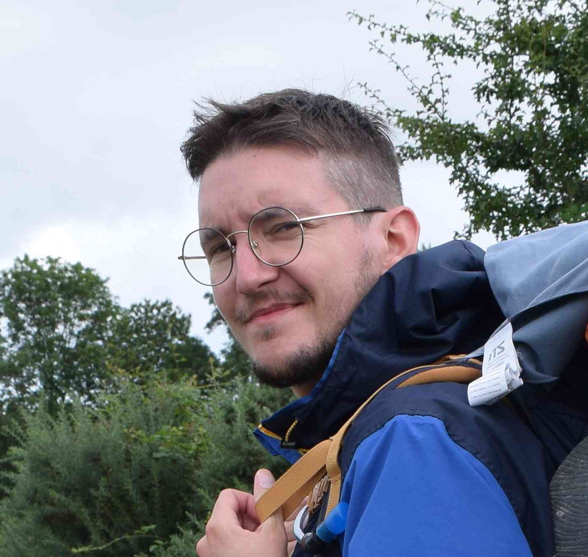

Hi! I'm Raphaël,
I am a post-doc researcher in the team-project MIMESIS at Centre Inria de l'Université de Lorraine, in Strasbourg 🥨 France.
My current work is about a posteriori error estimation and adaptive mesh refinement for the Immersed Boundary Method called φ-FEM.
As a member of MIMESIS my work aims at providing numerical tools for biomecanics simulations and real-time surgical simulations.
My research interests are: a posteriori error estimation for finite element methods, superconvergent gradient reconstruction, fractional partial differential equations, biomecanics and neural networks.
